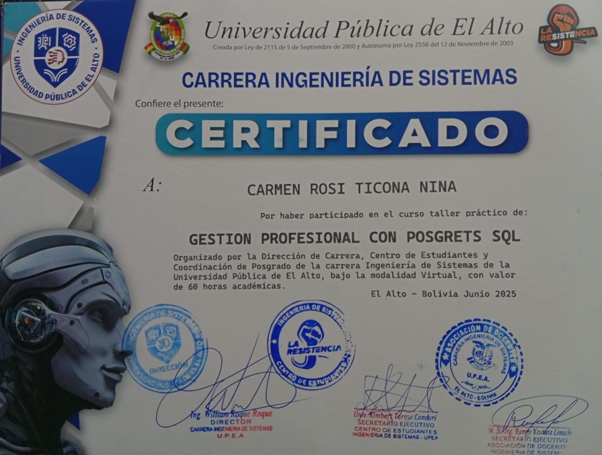
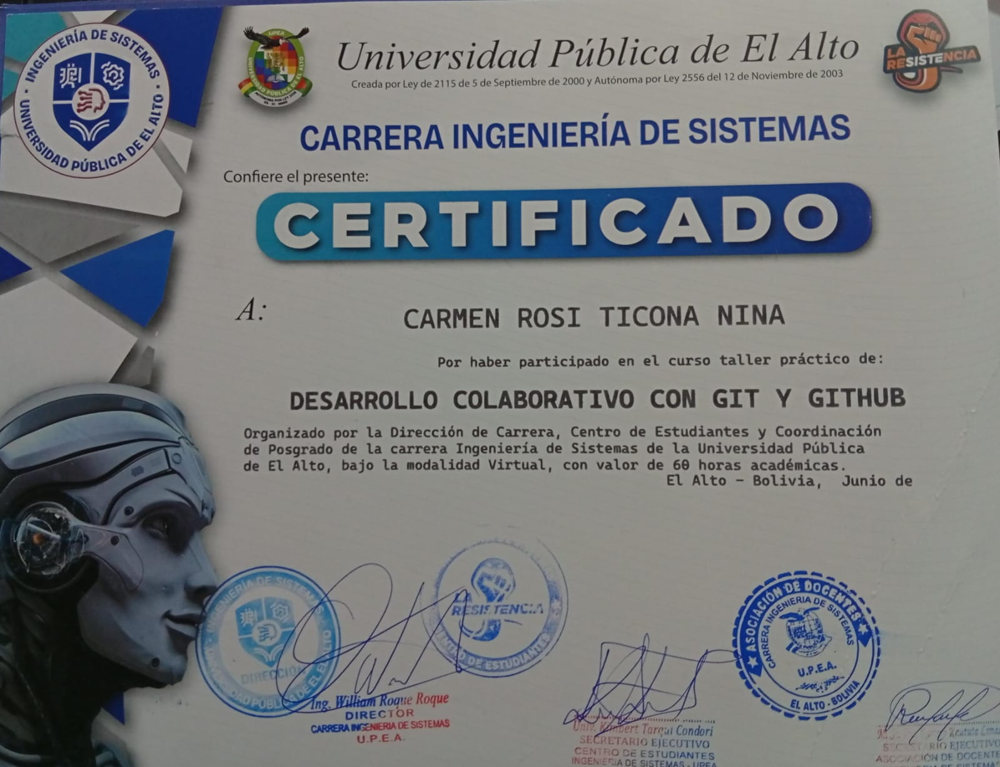
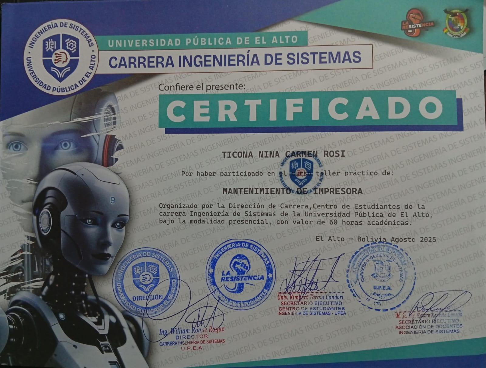
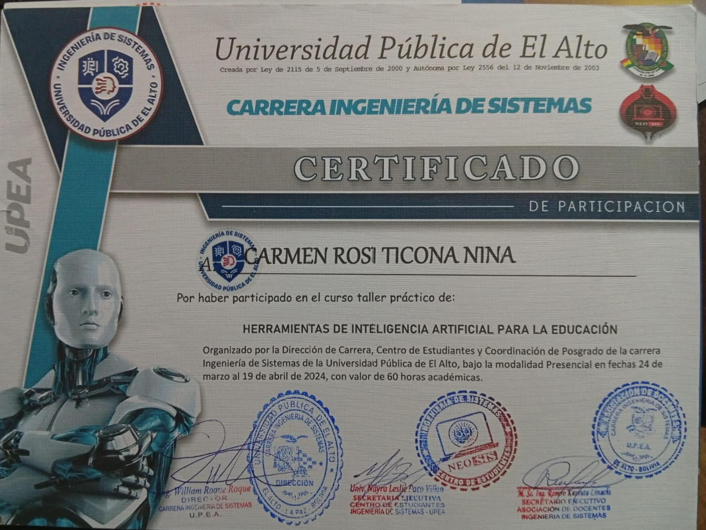
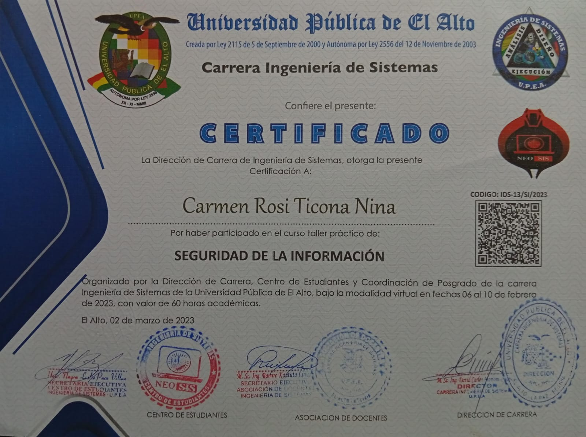
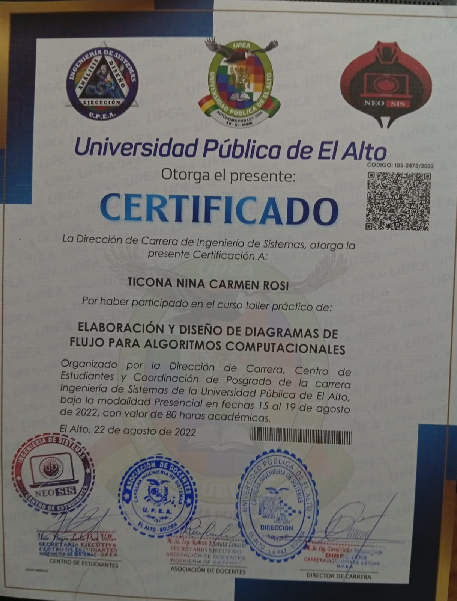

Carmen Rosi Ticona Nina
Estudiante de Ingeniería de Sistemas – UPEA
Estudiante de Ingeniería de Sistemas – UPEA
Estudiante de último año de Ingeniería de Sistemas de la UPEA, con formación en redes, sistemas informáticos y desarrollo web. Interesada en el área de Tecnologías de la Información, soporte técnico y mejora de sistemas institucionales.

GESTION PROFESIONAL CON POSGRETS SQL
UPEA | 60 horas | jun 2025

DESARROLLO COLABORATIVO CON GIT Y GITHUB
UPEA | 60 horas | jun 2025

MANTENIMIENTO DE IMPRESORA
UPEA | 60 horas | ago 2025

SEGURIDAD EN REDES
UPEA | 60 horas | ago 2025

HERRAMIENTAS DE INTELIGENCIA ARTIFIACIAL PARA LA EDUCACION
UPEA | 60 horas | abr 2024

SEGURIDAD DE LA INFORMACION
UPEA | 60 horas | feb 2023

CREAR UN AMBIENTE DE DESARROLLO WEB
UPEA | 60 horas | feb 2023

PROGRAMACION DE APLICACIONES MOVILES
UPEA | 80 horas | ago 2022

ELABORACION Y DISEÑO DE DIAGRAMAS DE FLUJO PARA ALGORITMOS COMPUTACIONALES
UPEA | 80 horas | ago 2022
Interesada en realizar pasantías en el área de Sistemas / Informática, apoyando en redes, soporte técnico y desarrollo de soluciones informáticas.
Email: ticonaninacarmenrosi@gmail.com
GitHub: github.com/Carmenrositicona